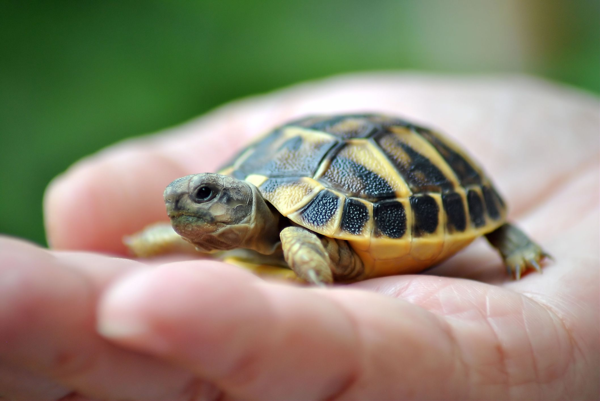
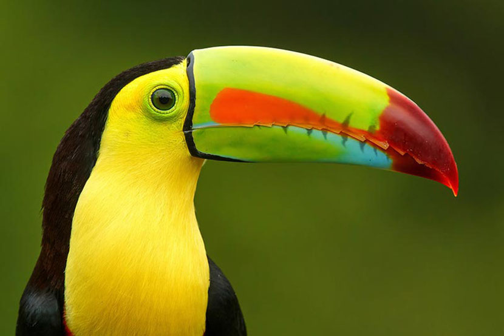

Dogs may not have as many taste buds as we do (they have about 1,700 on their tongues, while we humans have about 9,000), but that doesn’t mean they’re not discriminating eaters. They have over 200 million scent receptors in their noses (we have only 5 million) so it’s important that their food smells good and tastes good. The term “dog days” has nothing to do with dogs. It dates back to Roman times, when it was believed that Sirius, the Dog Star, added its heat to that of the sun from July 3 to August 11, creating exceptionally high temperatures. Did you know they were female? Toto’s role in The Wizard of Oz was played by a female Cairn Terrier named Terry, and the Taco Bell dog is actually a female Chihuahua named Gidget.
Turtles are reptiles of the order Testudines (or Chelonii[3]) characterized by a special bony or cartilaginous shell developed from their ribs and acting as a shield.[4] "Turtle" may refer to the order as a whole (American English) or to fresh-water and sea-dwelling testudines (British English).[5]
The Toco toucan—the best-known toucan species—is at home in South America's tropical forests but recognized everywhere. The toucan's oversized, colorful bill has made it one of the world's most popular birds.The 7.5-inch-long bill may be seen as a desirable mating trait, but if so, it is one that both male and female toucans possess. In fact, both sexes use their bills to catch tasty morsels and pitch them to one another during a mating ritual fruit toss.
